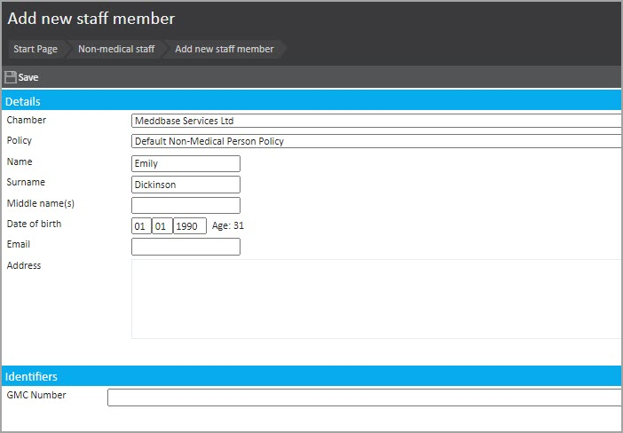
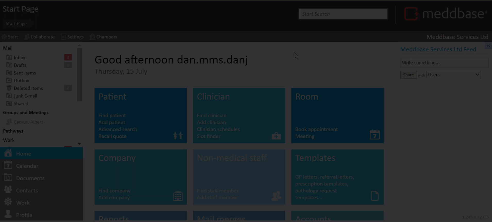

Provide instructions on how to add a member of staff to the chamber who is non-medical.
As with adding any individual to the system, adding a non-medical member of staff (such as a secretary or accountant) is a simple procedure.

The following fields are mandatory for creating this profile: Chamber, Policy, Name and Surname. However, there are also fields for Middle name(s), Date of birth, Email, Address and GMC number should these be of interest to you.
Want to see more?
This short video below presents the steps from the Start page to saving the record.
